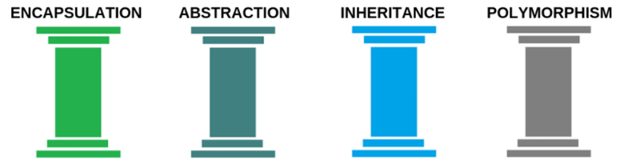

Chapter 3 - Object Orientation

1. Structured Programming
Functional decomposition: là một tiến trình phân chia các functions quá lớn, quá khó kiểm soát thành các functions nhỏ hơn để dễ hiểu, cũng như kiểm soát được nó.
Hầu hết functions sẽ yêu cầu dữ liệu để hoạt động. Và dữ liệu trong hệ thống thường được lưu ở dưới database hoặc có một số trường hợp trong memory như là các biến toàn cục. Các dữ liệu này thường phụ thuộc vào khi nên đôi khi sẽ có vấn đề xảy ra khi chúng ta thay đổi nó.
2. The Object Orientated Approach
OOP giúp chúng ta giảm bớt tác động của các vấn đề kể trên bằng cách liên kết data và functions có liên quan đến nhau vào module giống nhau.
3. Encapsulation
Tính đóng gói (Encapsulation) được hiểu nôm na là các data và các functions/methods có liên quan được đóng gói với nhau thành các class để tiện cho việc quản lý cũng như sử dụng. Nó có thể tránh được các vấn đề xung đột dữ liệu xảy ra.
4. Objects
Các đối tượng trong thế giới thực đều được đặc trưng bởi data và behaviour.
Ví dụ như 1 chiếc TV là một đối tượng, nó có các dữ liệu như là các kênh, tần số quét, độ sáng, độ phân giải,...Và nó cũng có các hoạt động như là tắt mở, chuyển kênh,...Ở đây chúng ta cũng có thể trình bày các thông tin trên bằng cách ghi dưới dạng modules như những gì đã nhắc ở trên.
Vì thế, chúng ta có thể gọi các modules là các Đối tượng/Objects.
Chúng ta có thể thay đổi các Objects để phù hợp với ngữ cảnh. Vì thế mà OOP phản ánh khá tốt về thế giới thực. Khi có vấn đề cần phải thay đổi thì giải giáp sẽ rất dễ dàng.
5. Terminology
Dữ liệu/Data của một đối tượng thường được gọi là các Thuộc tính/Attributes. Các hành vi khác nhau của mỗi đối tượng được gọi là các Phương thức/Methods. Lớp/Class là một khuôn mẫu của mỗi đối tượng. Mỗi lớp sẽ diễn tả các thuộc tính cũng như các phương thức tồn tại.
6. The Object Oriented Strategy
Hướng đối tượng mạnh mẽ khi làm việc ở cấp độ lớp/đối tượng nhưng kém trong việc thể hiện hành vi của toàn bộ hệ thống.
Cách tiếp cận hiện đại, được hỗ trợ mạnh mẽ bởi UML là quên tất cả về các đối tượng và các lớp:
- Ở giai đoạn đầu của một dự án, và thay vào đó tập trung vào những gì hệ thống phải làm được.
- Khi dự án tiến triển, các lớp dần dần được xây dựng để nhạn ra các chức năng của hệ thống cần thiết.
7. Summary
- Hướng đối tượng là một cách suy nghĩ khác so với cách tiếp cận có cấu trúc